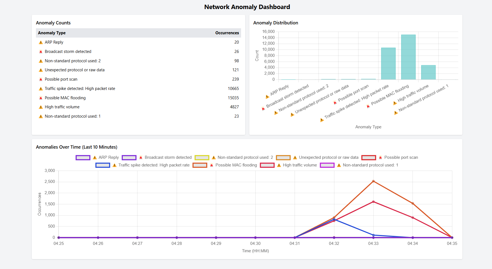
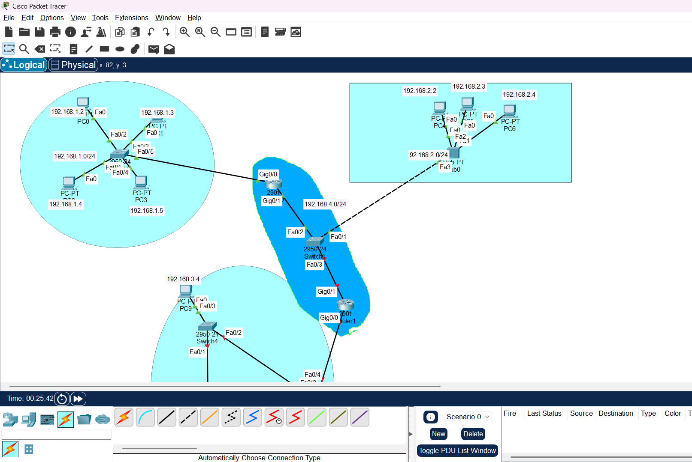

projects:$

Network Anomaly Detection Dashboard
A real-time dashboard for detecting ARP replies and port scans using Scapy, Flask, and Chart.js.
Repository
Cisco Network Topologies
Designed star, bus, and ring topologies with IP configurations in Cisco Packet Tracer.
Repository
Blockchain for DDoS Prevention
Research and prototype using blockchain and smart contracts for real-time DDoS mitigation.
Repository
Neural Network Line Follower
Built a neural network in C++ for a line-following robot, implemented on Arduino Uno.
Repository